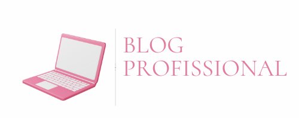

|  | |
|
|
|
IntroduçãoO propósito deste espaço é ser um reflexo do meu processo de crescimento constante — um lugar onde, além de compartilhar minha visão, espero também conectar com você de maneira genuína e inspiradora. Cada artigo, cada história, cada dica que você vai encontrar por aqui foi escrita com muito carinho, com o intuito de trazer algo que, de alguma forma, agregue ao seu próprio caminho. Eu acredito que a verdadeira evolução acontece quando conseguimos olhar para dentro e, ao mesmo tempo, aprender com o que acontece ao nosso redor. E é isso que quero dividir com você: uma troca honesta sobre os altos e baixos da vida profissional e pessoal. Obrigado por estar aqui. Espero que você se sinta em casa! Sobre mimOlá! Meu nome é Ana Clara Orbolato Gomes, sou estudante de Desenvolvimento de sistemas e criei este blog para compartilhar minha jornada, aprendizados e interesses dentro da área de tecnologia. Ainda estou no começo da caminhada, mas acredito que cada passo, cada curso e cada experiência conta muito. Apesar de ainda estar em formação, venho desenvolvendo habilidades importantes que complementam meu perfil profissional. Tenho facilidade com organização, comunicação escrita, trabalho em equipe e resolução de problemas, sempre buscando aprender com autonomia e curiosidade. Acredito na importância de unir conhecimento técnico com uma postura proativa e aberta ao aprendizado constante. Tenho buscado complementar minha formação com experiências e cursos que ampliam minha visão e desenvolvem minhas habilidades na área de tecnologia. Estudei inglês por alguns anos, o que tem sido essencial para acompanhar conteúdos técnicos e me comunicar melhor nesse universo globalizado. Também realizei cursos introdutórios sobre inteligência artificial, que despertaram ainda mais meu interesse por inovação e novas tecnologias. Atualmente, estou aprendendo muito no curso técnico de Desenvolvimento de Sistemas pelo SENAI, onde tenho adquirido uma base sólida em lógica de programação, banco de dados, front-end e back-end. Gosto de explorar novas ideias, aprender com outras pessoas e construir meu caminho com curiosidade e propósito. Se você também está nessa fase de descobertas ou quer trocar experiências, sinta-se à vontade por aqui. Vamos crescer juntos! |
Próxima página |
| Todos os direitos reservados. | |